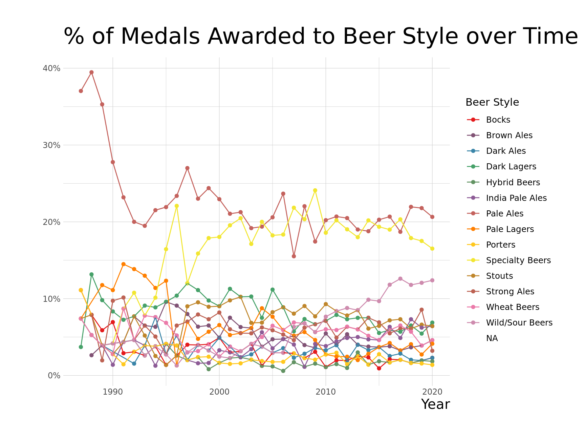
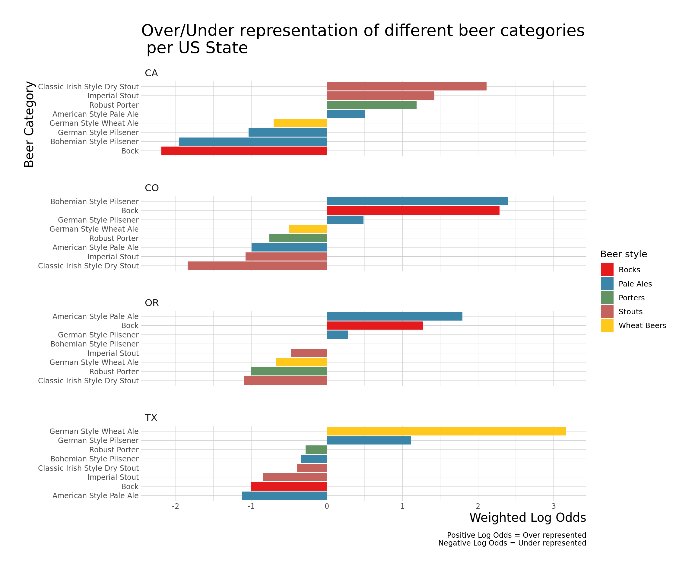

Today I am exploring #TidyTuesday Great American Beer Festival
library(tidyverse)
library(ggplot2)
library(fuzzyjoin)
library(stringdist)
library(tigris)
beer_styles <- read_csv("beer_styles.csv")
state_info <- fips_codes %>%
group_by(state) %>%
slice(1) %>%
select(state, state_name)
beer_awards <- readr::read_csv(
paste0("https://raw.githubusercontent.com/rfordatascience/tidytuesday/",
"master/data/2020/2020-10-20/beer_awards.csv")) %>%
mutate(brewery = str_replace(brewery, " Company", ""),
brewery = str_replace(brewery, " Co.", ""))
beers <- read_csv("beers.csv") %>%
select(-X1)
breweries <- read_csv("breweries.csv") %>%
mutate(name = str_replace(name, " Company", ""),
name = str_replace(name, " Co.", "")) %>%
inner_join(state_info, by="state")
beer_joined <- breweries %>%
inner_join(beers, by="brewery_id") %>%
rename(brewery_name = name.x,
beer_name = name.y) %>%
full_join(beer_awards,
by=c("city"="city",
"state"="state",
"brewery_name"="brewery",
"beer_name"="beer_name")) %>%
inner_join(state_info, by="state") %>%
mutate(state_name = if_else(is.na(state_name.x),
state_name.y, state_name.x)) %>%
select(-state_name.x, -state_name.y) %>%
rename(style2 = style)
beer_awards_joined <- beer_joined %>%
mutate(category = case_when(
is.na(category) & !is.na(style2) ~ style2,
is.na(category) & is.na(style2) ~ beer_name,
TRUE ~ category)) %>%
mutate(category = str_replace_all(category, "-", " "),
category = str_replace_all(category, "Ale, ", ""),
category = str_replace_all(category, "Lager, ", "")) %>%
select(-id, -style2) %>%
stringdist_left_join(beer_styles, by = c("category"="category")) %>%
mutate(category = if_else(is.na(category.x), category.y, category.x)) %>%
select(-category.y, -category.x) %>%
mutate(category = str_to_lower(category),
style = case_when(
str_detect(category, "brown") ~ "Brown Ales",
str_detect(category, "dark lager|o*tober|dark pils") ~ "Dark Lagers",
str_detect(category, "dark ale") ~ "Dark Ales",
str_detect(category, "gose|wild|fruit|brett|sour") ~ "Wild/Sour Beers",
str_detect(category, "wheat|style weisse") ~ "Wheat Beers",
str_detect(category, "cream") ~ "Hybrid Beers",
str_detect(category, "spice|special|alcoholic") ~ "Specialty Beers",
str_detect(category, "pils|bitter|amber ale|light lager|zwickelbier|helles") ~ "Pale Ales",
str_detect(category, "pale ale") & !str_detect(category, "india") ~ "Pale Ales",
str_detect(category, "strong ale") ~ "Strong Ales",
str_detect(category, "india pale ale") ~ "India Pale Ales",
TRUE ~ style)) %>%
filter(!((category == "American IPA") & (style == "American IPA"))) %>%
mutate(winner = !is.na(medal),
category = str_to_title(category))beer_awards_joined %>%
mutate(style = if_else(is.na(style), "_NA", style),
style = fct_reorder(style, desc(style))) %>%
filter(winner) %>%
count(style) %>%
ggplot() +
aes(y=style, x=n, fill=style) +
geom_col(position = "dodge") +
theme_ipsum_ps(axis_title_size = 15, plot_title_size = 25) +
labs(x = "Count", y = "Beer Styles", title = "Counts of Beer Styles") +
theme(legend.position = "none") +
scale_fill_manual(values = getPalette(15))
library(tidylo)
library(tidytext)
log_odds <- beer_awards_joined %>%
filter(winner) %>%
filter(fct_lump(category, 8) != "Other",
fct_lump(state, 4) != "Other") %>%
count(state, category) %>%
complete(state, category, fill = list(n=0)) %>%
bind_log_odds(state, category, n) %>%
inner_join(select(beer_awards_joined, style, category), by = "category") %>%
mutate(category = reorder_within(category, log_odds_weighted, state))
log_odds %>%
ggplot() +
aes(x=log_odds_weighted, y=category, fill=style) +
geom_col() +
scale_y_reordered() +
facet_wrap(~ state, nrow = 4, scale = "free_y") +
labs(y = "Category", x = "Log odds weighted", fill = "Beer style",
title = "Over/Under representation of different beer categories.") +
theme_ipsum_ps(axis_title_size = 15, plot_title_size = 20) +
scale_fill_manual(values = getPalette(8))
beer_awards_joined %>%
filter(winner) %>%
filter(fct_lump(state, 4) != "Other",
fct_lump(style, 8) != "Other") %>%
count(state, style) %>%
complete(state, style, fill = list(n=0)) %>%
bind_log_odds(state, style, n) %>%
mutate(style = reorder_within(style, log_odds_weighted, state),
beer_style = sub("__.*", "", style)) %>%
ggplot() +
aes(x=log_odds_weighted, y=style, fill=beer_style) +
geom_col() +
scale_y_reordered() +
facet_wrap(~ state, nrow = 4, scale = "free_y") +
labs(y = "Beer styles", x = "Log odds weighted", fill = "Beer style") +
theme(text = element_text(size = 15)) +
theme_ipsum_ps(axis_title_size = 15, plot_title_size = 25) +
scale_fill_manual(values = getPalette(8))beer_awards_joined %>%
filter(winner) %>%
filter(fct_lump(state, 4) != "Other",
fct_lump(style, 9) != "Other") %>%
count(state, style) %>%
complete(state, style, fill = list(n=0)) %>%
bind_log_odds(state, style, n) %>%
mutate(style = reorder_within(style, log_odds_weighted, state),
beer_style = sub("__.*", "", style)) %>%
ggplot() +
aes(x=log_odds_weighted, y=style, fill=beer_style) +
geom_col() +
scale_y_reordered() +
facet_wrap(~ state, nrow = 8, scale = "free_y") +
labs(y = "Beer styles", x = "Log odds weighted", fill = "Beer style") +
theme(text = element_text(size = 15)) +
theme_ipsum_ps(axis_title_size = 15, plot_title_size = 25) +
scale_fill_manual(values = getPalette(9))
library(broom)
by_year_style <- beer_awards_joined %>%
filter(winner) %>%
add_count(year, name = "year_total") %>%
count(style, year, year_total, sort = TRUE) %>%
mutate(pct_year = n / year_total)
over_under <- by_year_style %>%
group_by(style) %>%
summarize(model = list(glm(cbind(n, year_total - n) ~ year,
family = "binomial"))) %>%
mutate(tidied = map(model, tidy, conf.int = TRUE)) %>%
unnest(tidied) %>%
filter(term == "year") %>%
mutate(p.value = format.pval(round(p.value, 2)),
style = fct_reorder(style, estimate))## `summarise()` ungrouping output (override with `.groups` argument)over_under %>%
ggplot() +
aes(x=estimate, y=style) +
geom_point() +
geom_vline(xintercept = 0, lty = 2) +
geom_errorbarh(aes(xmin = conf.low, xmax = conf.high), height = .1) +
theme_bw() +
labs(x = "Estimated slope",
title = "Which beers styles are increasingly winning\n more over time throughout the US?",
y = "") +
theme(text = element_text(size = 15)) +
theme_ipsum_ps()by_year_state_style <- beer_awards_joined %>%
add_count(year, name = "year_total") %>%
mutate(state = fct_lump(state, 4)) %>%
count(style, state, year, year_total, sort = TRUE) %>%
mutate(pct_year = n / year_total)
by_year_state_style %>%
mutate(style = fct_lump(style, 8)) %>%
filter(!state %in% c(NA, "Other")) %>%
ggplot() +
aes(x=year, y=pct_year, color=style) +
geom_line() +
expand_limits(y = 0) +
scale_y_continuous(labels = scales::percent) +
facet_wrap(~ state, ncol = 2) +
theme_bw() +
labs(y = "% per year", x = "Year", color = "Beer styles") +
theme(text = element_text(size = 15)) ## Warning: Removed 14 row(s) containing missing values (geom_path).